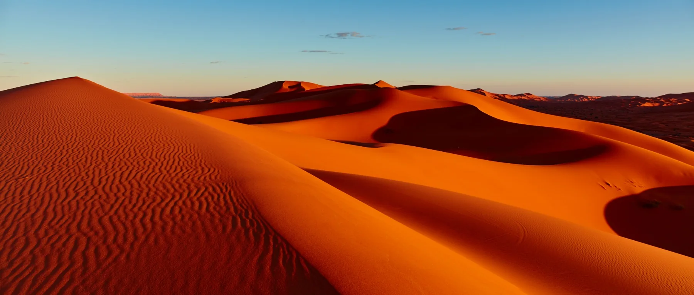

Merzouga
Erg Chebbi se encuentra en el este de Marruecos, cerca de Merzouga. Es una buena opción si quieres incluir el desierto dentro de una ruta por el este del país, especialmente combinándolo con lugares como Fez, Midelt o las gargantas del Todra y Dades.
Las grandes dunas están muy cerca de la carretera y existe una amplia oferta de alojamientos y actividades.
Puede encajar contigo si buscas
- un acceso más sencillo al desierto
- una mayor variedad de alojamientos
- combinar el Sahara con una ruta por el este
- actividades y servicios turísticos más desarrollados